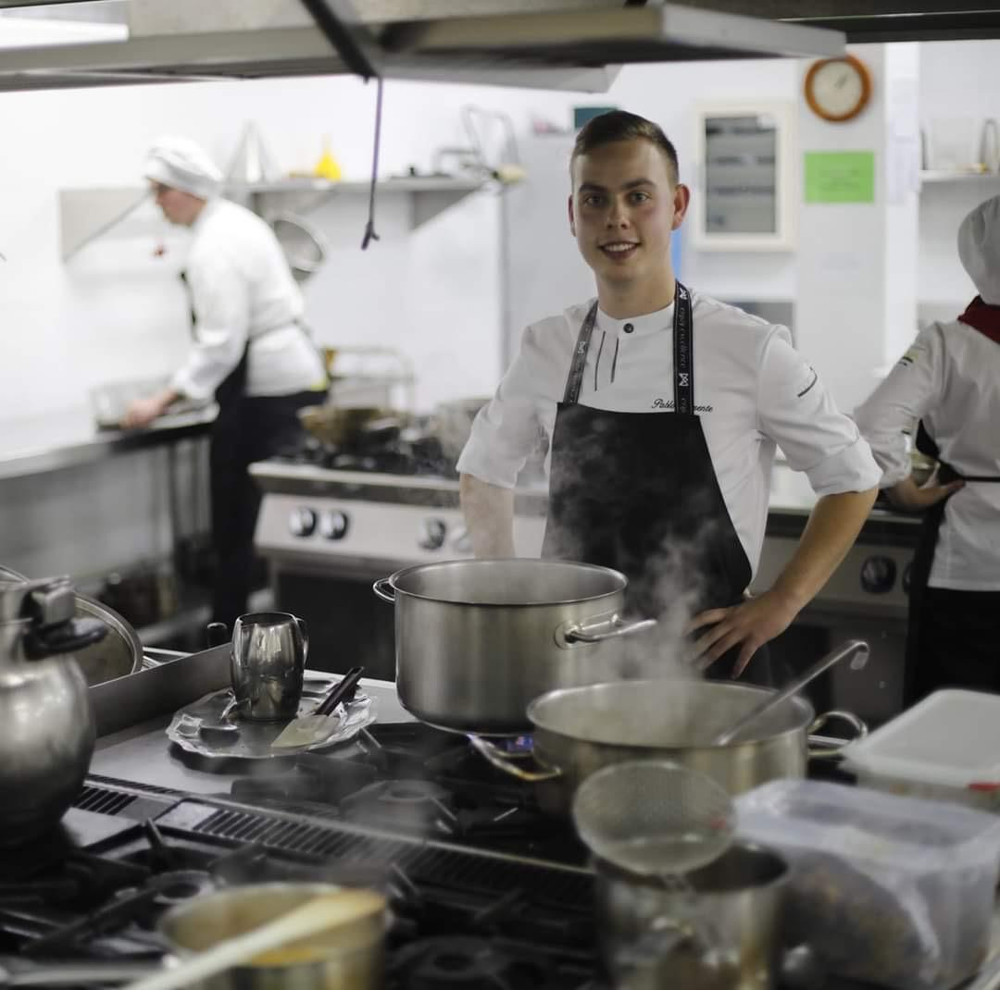

Un proyecto que nace desde dentro de la cocina, no desde fuera.

Empecé en la cocina hace 7 años, en Asturias, cursando el grado medio de cocina y gastronomía y posteriormente el grado superior en dirección de cocina.
Durante ese proceso gané 9 concursos a nivel nacional. El que marcó un punto de inflexión fue el Premio Jóvenes Promesas de la Alta Cocina de Le Cordon Bleu, que me permitió formarme en la escuela.
He pasado por cocinas Michelin en España e Italia —Al Monasterio, Pedro Martino, El Corral de Indianu y Casa Fermín—. Esa exigencia, ritmo y nivel técnico son la base de todo lo que hago hoy en NODU.
En paralelo, he desarrollado proyectos propios y trabajado en entornos de alta exigencia, desde el ámbito privado hasta el gastronómico y empresarial. He sido chef privado durante dos años para perfiles de primer nivel en el fútbol profesional (entorno Real Madrid), y actualmente desarrollo experiencias gastronómicas a medida para marcas y clientes de alto nivel.
Soy cofundador de QREMA y de HOST Catering, y desde hace más de tres años trabajo en el desarrollo de eventos boutique y propuestas gastronómicas personalizadas dentro del segmento premium.
También colaboro como asesor gastronómico en proyectos como Oribu y Kasiba, aportando visión en concepto, producto y ejecución.
Actualmente desarrollo NODU como una estructura para crear, construir y ejecutar proyectos gastronómicos con identidad.
Asturias. Primer contacto real con la cocina profesional, compaginado con competiciones.
Asturias. Formación en gestión y estructura de cocina, junto a experiencia en restaurantes Michelin en España e Italia.
Acceso mediante el Premio Jóvenes Promesas. Formación técnica avanzada en cocina y pastelería.
Experiencia con perfiles de primer nivel en el fútbol profesional (entorno Real Madrid).
Experiencias gastronómicas personalizadas para marcas de lujo y clientes privados.
Oribu y Kasiba
He competido en algunos de los concursos más exigentes para jóvenes cocineros en España. El más determinante fue el Premio Jóvenes Promesas de la Alta Cocina de Le Cordon Bleu, que redefinió mi trayectoria profesional.
Reservar una consulta